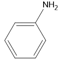

Witaj w temacie aminy
Czym są aminy?
Aminy to takie substancje, które zawierają grupe aminową(-NHn). n = 3 - Ilość wiązań
Nazewnictwo
Do nazwy węglowodoru dodaje się "-amina" lub "amino-". np.
- CH3NH2 -
-  -
- NH2-CH2-CH2-CH2-NH2 -
- NH3 -
- CH3-NH-CH3 -
- CH3-CH2-NH-CH3 -
Pozyskiwanie
Aminy można pozyskać za pomocą redukcji nitrów. CH3NO2 + 3H2 → CH3NH2 + H2O
Rodzaje amin
Aminy dzielą sie na 3 typy:
- I rzędowe
- II rzędowe
- III rzędowe
| Rzędowość | I | II | III |
|---|---|---|---|
| Węgle | 2 | 1 | 0 |
| pH | Większe niż II i III rzedowych | Pomiędzy I i III rzedowymi | Mniejsze niż II i III rzedowych |
| Reaktywność | Większa niż II i III rzedowych | Pomiędzy I i III rzedowymi | Mniejsza niż II i III rzedowych |
| Rozpuszczalność | Większa niż II i III rzedowych | Pomiędzy I i III rzedowymi | Mniejsza niż II i III rzedowych |
To tyle :D ten temat otwiera substancje o znaczeniu biologicznym